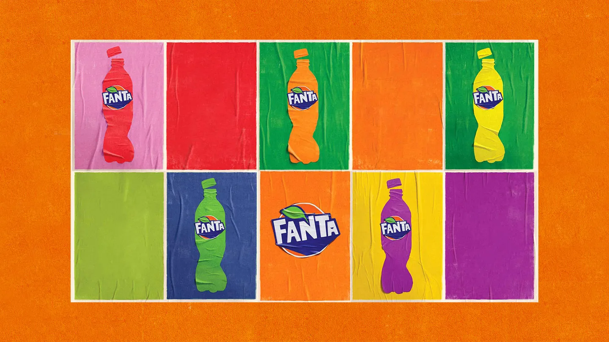
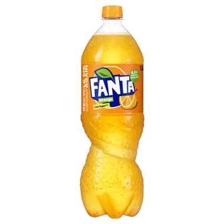
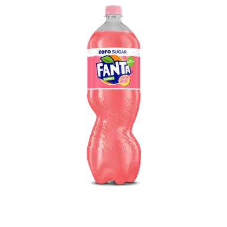

Producten
Fanta Orange
Zoals je weet is het drinken van Fanta Orange, dankzij zijn authentieke smaak, een unieke ervaring! Maar wat je misschien nog niet wist, is dat, wanneer je Fanta Orange drinkt, je eigenlijk volop geniet van een drank met sinaasappelsap* met natuurlijke aroma’s. Welcome to the fun, natuurlijk!
*Uit sapconcentraat
**Fanta Orange recepten kunnen verschillen in Europa
Voedingsinformatie
Portie
per 100ml
Totaal vet 0g
Waarvan verzadigde vetzuren 0g
Koolhydraten 5.6g
Waarvan suikers 5.6g
Eiwitten 0g
Natrium 0.01g
Ingrediënten
Sprankelend water; sinaasappelsap uit concentraat (6.5%); suiker; voedingszuren: citroenzuur, appelzuur, natriumcitraten; natuurlijke sinaasappelaroma’s met andere natuurlijke aroma’s; zoetstoffen: natriumcyclamaat, acesulfaam-K, sucralose; conserveermiddel: kaliumsorbaat; antioxidant: ascorbinezuur; wortelconcentraat; stabilisator: guarpitmeel; kleurstof: carotenen.
Is mijn Fanta in Nederland identiek aan Fanta ergens anders in Europa?
We produceren Fanta orange in heel Europa en de hoeveelheid sap kan verschillen van land tot land. De hoeveelheid sap in de verschillende landen komt meestal overeen met die van gelijkaardige producten die lokaal verkrijgbaar zijn, en met de lokale regelgeving. Fanta orange wordt in heel Europa gezoet met suiker of een combinatie van suiker en zoetstoffen. We werken aan een lager suikergehalte voor onze dranken, waardoor de combinatie van zoetstoffen en suiker in het product niet in alle landen gelijk is. Op de verpakking vind je altijd lokale informatie, zodat je over alle ingrediënten- en voedingswaardegegevens beschikt om te genieten van de drank in je hand.
Fanta Pomelo Zero Sugar
Zoals Pomelo smaakt: een klein zuurtje, een bittertje en een zoetje. Perfect in balans en vooral te lekker om te laten staan! Onze Fanta Pomelo Zero Sugar is een heerlijke verfrissing voor elk moment.
Voedingsinformatie
Portie
per 100ml
Totaal vet 0g
Waarvan verzadigde vetzuren 0g
Koolhydraten 5.6g
Waarvan suikers 5.6g
Eiwitten 0g
Natrium 0.01g
Ingrediënten
Sprankelend water; pomelosap uit sapconcentraat (3,4%); voedingszuren: citroenzuur, natriumcitraat; natuurlijke pompelmoesaroma's met andere natuurlijke aroma's; kleurstoffen: anthocyanen, carotenen; zoetstoffen: aspartaam, acesulfaam-K; conserveermiddel: kaliumsorbaat. Bevat een bron van fenylalanine.
Voor welke Fanta ga jij?
Fanta is de meest kleurrijke frisdrank die er is. Met een regenboog aan fruitsmaken is er altijd wel een Fanta te vinden die bij jou past. Bijna alle Fanta varianten zijn verkrijgbaar zonder suiker en perfect te combineren met een heerlijke snack!